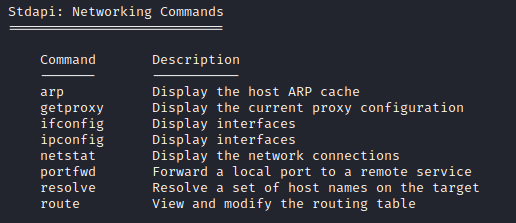

Networking commands
Interfacesmeterpreter> ifconfig #Windows/Linux
meterpreter> ipconfig #Windows/Linux
meterpreter> shell
C:\> ipconfig /all #Windows, more detailed output than meterpreter
root@kali:/# ifconfig #Linux, more detailed output than meterpreter
meterpreter> netstat
C:\> netstat -ano #Windows
meterpreter> ps
root@kali:/# ps #Linux
C:\> wmic service get caption,started #Windows